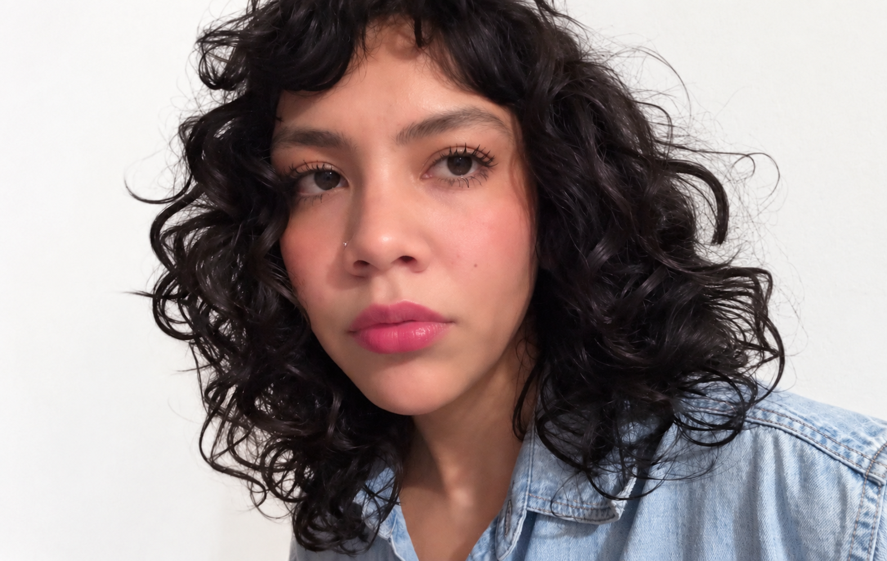

DETRÁS DE LOS PÍXELES

HOLA, SOY BRENDA BELÉN
Soy licenciada en Comunicación Multimedia, con interés en el diseño 3D, UX/UI, la ilustración, la identidad visual y el desarrollo de experiencias digitales.
Me gusta explorar diferentes herramientas y técnicas para transformar ideas en proyectos visuales que combinen creatividad, funcionalidad y personalidad.
Mi objetivo es seguir creciendo profesionalmente, aprender nuevas tecnologías y participar en proyectos que conecten el arte con el diseño digital.
ÁREAS CREATIVAS
SOFTWARE Y HERRAMIENTAS
BLENDER · MAYA · ZBRUSH · ILLUSTRATOR · PHOTOSHOP · AFTER EFFECTS · VS CODE
